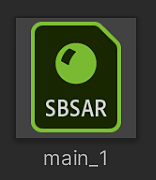
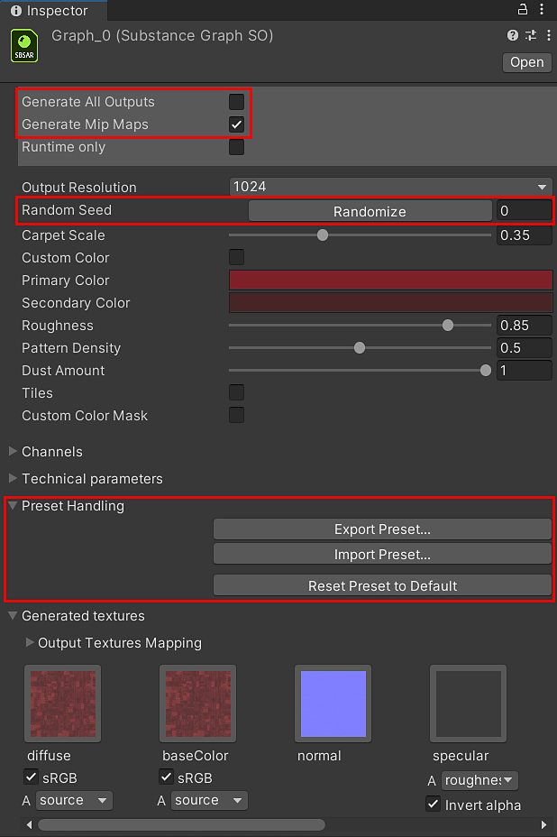

In the Project window, Select the sbsar file logo for the graph you want to customize. The sbsar has the green "SBSAR" logo.
Parameters for the Substance material are accessible on the Substance Graph Object (SGO).
In the Project window, Select the sbsar file logo for the graph you want to customize. The sbsar has the green "SBSAR" logo.

